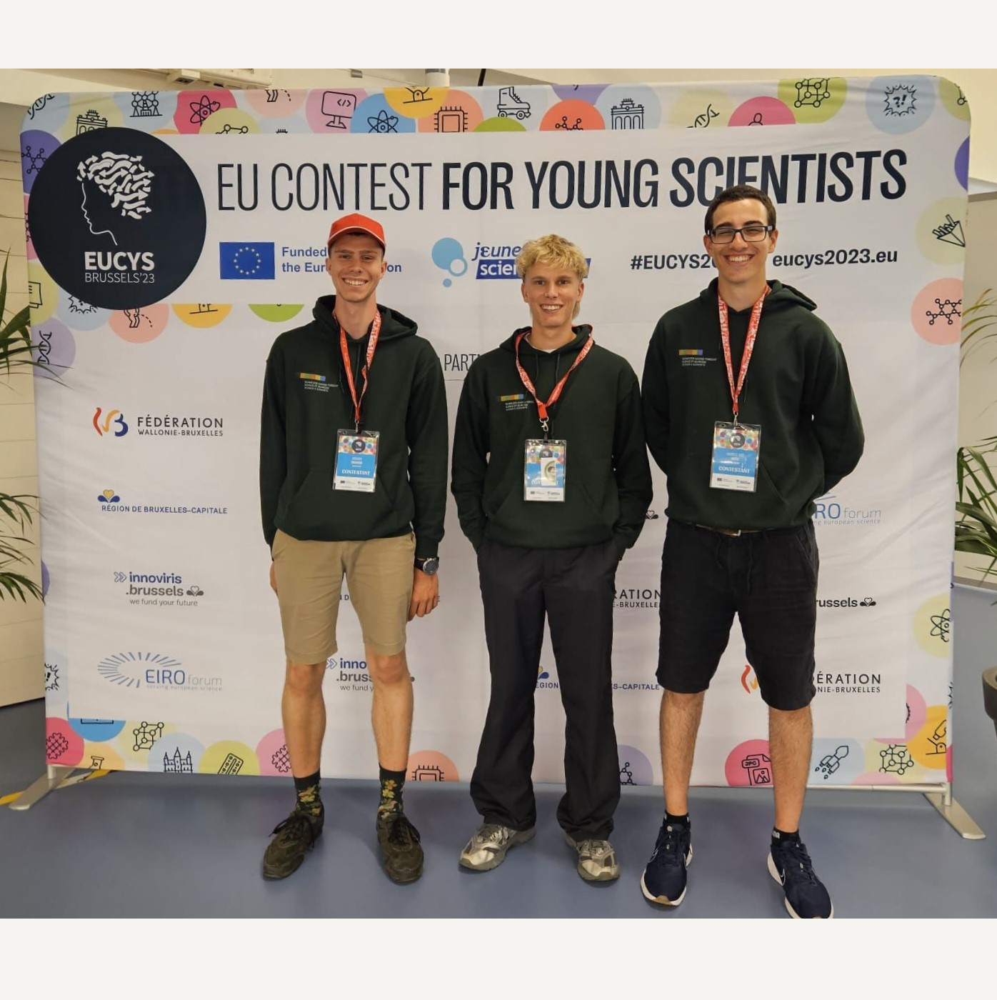

In Switzerland, a final thesis (Matura thesis) must be submitted at the end of the
six-year high school period. Students can choose their own topic and pursue their own
interests within a school setting. This provides a rare opportunity to familiarise
yourself with a topic and carry out research independently.
I took advantage of this opportunity because of my preference for autodidactic
and in-depth learning. I have learnt how to work scientifically. I spent a lot of
time understanding scientific publications, measuring material properties and
mastering 3D printing. Of course, I also had to deal with time pressure and many obstacles.
In the end, I also learnt how to write a scientific paper. The result was a paper of almost
seventy pages, which in the end was awarded the highest grade and honoured by an internal
school jury. This first success motivated me to further develop my work.
Source image: Kantonsschule Zürich Nord, originator/photographer: Christina Hemauer
In the national competition for young researchers, participants go through
several selection procedures to reach the final. At the end, each project is given
a rating (good, very good, excellent). One can also win special prizes such as
participation in other competitions or in special events.
The organisation helped me to
bring my work to a national stage and gain self-confidence. I got involved in many interesting
conversations that reinforced my belief that I was developing a promising and useful technology.
I received the rating "excellent" and two special prizes: Participation in the European and
World Championships for Young Researchers in Brussels and Los Angeles respectively.
With these unexpected successes, my work was promoted to an international level.
Suddenly I was part of a delegation that was supposed to represent our country. For me,
however, it was more a matter of pride than pressure. It also fuelled my ambition.
My work was mentioned in the local newspaper. In this way, the citizens of my
village could be informed about my still unknown research topic. In the interview,
I also tried to motivate young people for science and research.
Furthermore, the article talks about my experiences (difficulties, approach,
motivation) during my research. It also discusses my relationship to research
and science. For me, rational thinking is a calming tool and a place of retreat
in times of social turbulence and war fears.
Finally, the article mentions my visions for the future and my intentions for
research projects in general, namely to make the world a better place.

The European Championship for Young Researchers took place in September.
I had the opportunity to represent Switzerland in Brussels together with two other members
of the delegation. Delegations from numerous European countries spent a week discussing their
research projects. There was a cosmopolitan atmosphere and it was very fulfilling to
exchange ideas with other young people who were equally enthusiastic about science.
The scientific exchange gave me hope that despite our different customs and cultures
and the increasing international conflicts, we can still reach a consensus and work together
for a better future.

I met with the President of the Swiss Confederation (in 2023), Alain Berset,
and other winners of the 57th national science competition. He humorously emphasised the role of
science in politics (example of corona) and the responsibility/duty of the younger
generations to solve the big problems of the future. The Federal Councillor also mentioned
the advantages of Switzerland for us young researchers: Excellent universities and
organisations, such as Swiss Youth in Science, which support us, with our projects.
For me, the meeting with the Federal Councillor was a surreal experience. I am very
interested in politics and constantly follow the latest developments in Parliament.
Therefore, to physically meet such a prominent personality, who you
normally only know from the media, was so far beyond my imagination that I would
never have dreamed of it. But thanks to my scientific work and the tireless
commitment of Swiss Youth in Science, this became a reality. So a big thank
you to Swiss Youth in Science and Alain Berset!


.png)

.png)